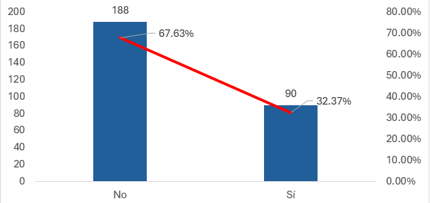
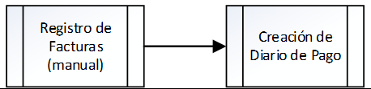
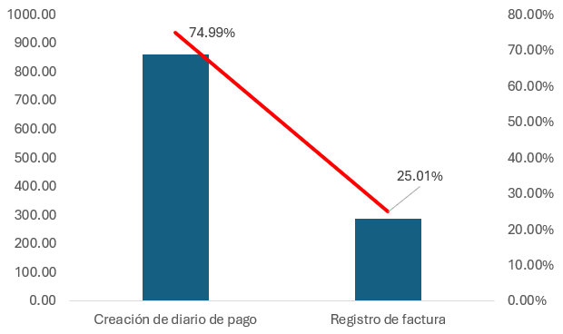

Los retrabajos de facturas en el área de CxP representan un desafío importante para la productividad del área. Como se puede apreciar, estos retrabajos equivalen a un 32.37% de las facturas trabajadas por el equipo.
Otro desafío para la productividad del área es el registro manual de facturas, los cuales representan un 25.01% de la carga laboral de los Auxiliares Sr. de Cuentas por Pagar.
 